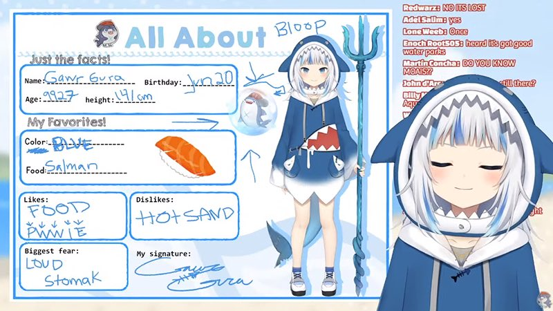
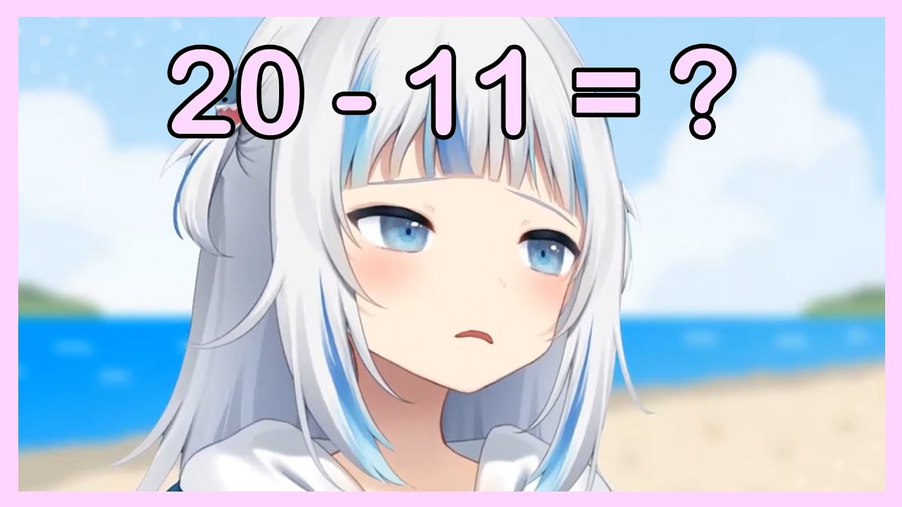
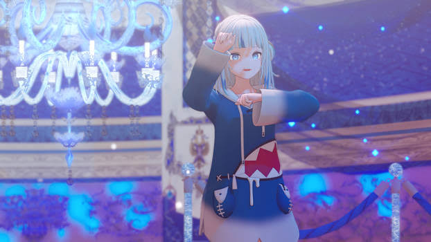
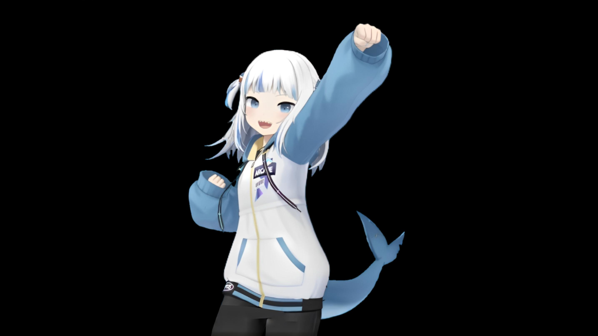

GURA GALLERY
Koleksi momen, karya, dan ilustrasi bertema Gawr Gura.

MUSIC
REFLECT Single Cover

STREAMS
The Legendary "a" Debut
CUTE
Chibi Shark Hoodie

MEMES
Apex Math Genius

MUSIC
Hololive Stage Showcase

CUTE